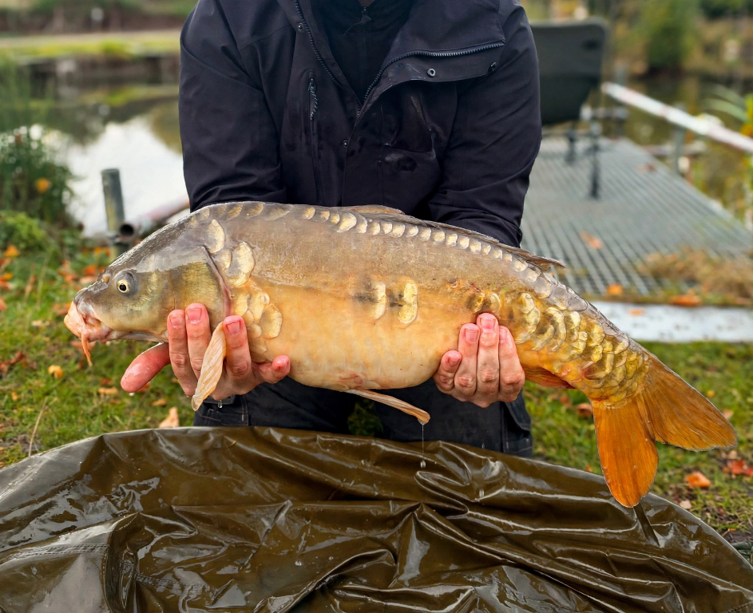

Catch Log

Keep your catches, photos and session notes together on this device.
Log a catch
Your catches
Your catch log is empty. Add your first catch above.
Your data
Catch records and photos stay in this browser on this device. Export a backup before clearing browser data or changing devices.